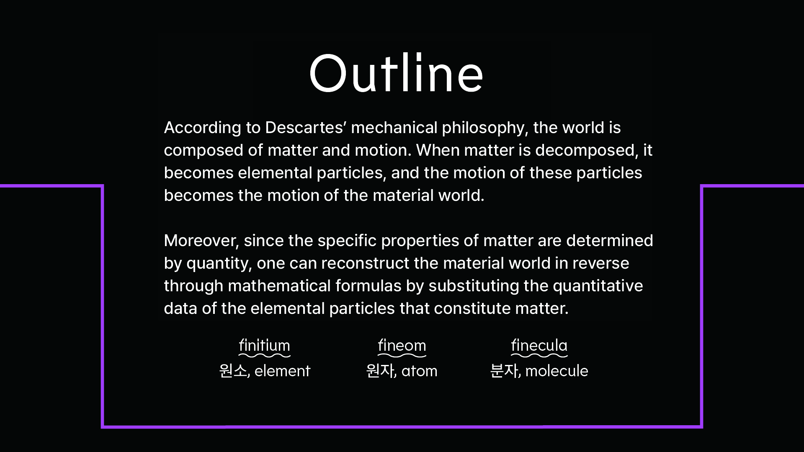
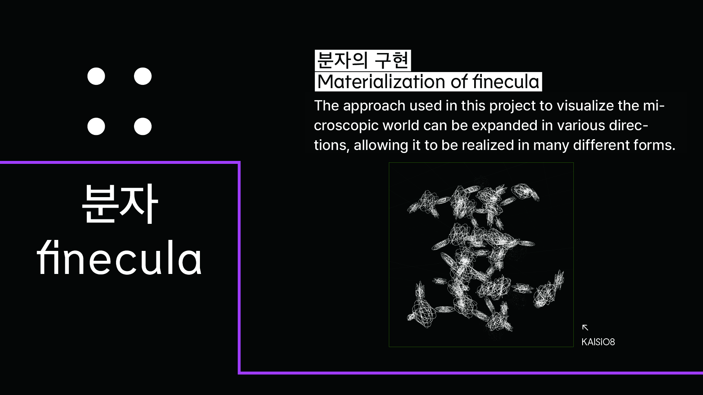
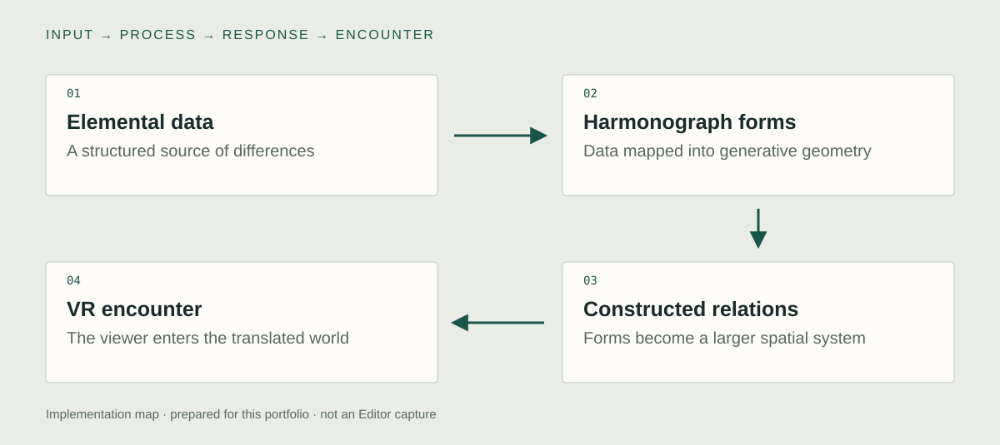

Unity implementation
Data-to-form translation
I contributed to the collaborative translation of periodic-table data into harmonograph-based forms. The central decision is the mapping: a structured difference in the source becomes a visible difference in the generated form. The original data-to-parameter contract should accompany any future code or equation presented as the production implementation.

Unity world construction
I helped construct the Unity world that organizes those forms into a speculative universe. The work does more than display isolated objects. Arrangement, scale, and relationships create an environment in which the data can be encountered as a larger visual system.
VR presentation
The project makes its visual system inhabitable through VR. My contribution combines the translation method with building the virtual world. The experience asks how a classification can become a place, rather than claiming that the world is a physically accurate simulation of atoms or chemical behavior.

System & design decisions

- 01Elemental data
A structured source of differences
- 02Harmonograph forms
Data mapped into generative geometry
- 03Constructed relations
Forms become a larger spatial system
- 04VR encounter
The viewer enters the translated world
A translation rule with a point of view
Mapping data to a generative function is a design decision. The rule gives the world consistency while also determining what kinds of relationships it makes visible.
From isolated form to world
The generated object is only the first level. The project then organizes forms into larger relations that can be explored in VR, making composition and spatial experience part of the visualization.
Concept
What kind of world becomes possible when scientific classification is treated as material for construction?
Fineo begins with the periodic table but does not stop at displaying its entries. Data becomes generated forms, which can be related as larger structures and constellations. The work proposes a constructed material world: a translation from numerical order into an experienced spatial order. Numerical differences become forms, and forms become an explorable order.
Collaboration: Geum Jaesung · Jonghoon Ahn · Yu Hwanjun / Choco Loading
Development
Retrospective planning notes, prepared for this portfolio.
Set the proposition
Treat data as a source of constructed matter rather than a table that must stay on a flat page.
Design the translation
Choose the relation between data differences, generated form, and the visual vocabulary of the world.
Compose across scales
Move from individual forms to clusters and a navigable setting. Judge whether the translation remains perceptible across those scales.
Further research
How does entering a data-derived world change the relationships a viewer notices?
Vary: A flat arrangement versus an explorable spatial arrangement of the same generated forms.
Hold consistent: Source data, form-generation rules, labeling, and exposure time.
Proposed comparison. No controlled study or measured effect is reported.
Documentation
The harmonograph, periodic-table, collaborative authorship, and VR premise are documented. Old hardware lists and inconsistent equations are not used as implementation evidence.
Technical captures to add
Editor and runtime captures still needed to inspect the implementation:
- Data-to-form translation
One source entry, its actual generation parameters, and the resulting object. Compare two elements while keeping the visualization rule consistent.
- Unity world construction
The generated forms in the Unity scene and their organization into a larger environment. Move from a single form to the surrounding group without changing its identity.
- VR presentation
The VR viewing setup and the scene as experienced from the participant's position. Record navigation from one generated form to its surrounding spatial relationships.
- Show one actual data entry, its generation parameters, the resulting form, and its placement in the Unity world.
- Connect that sequence to VR navigation. Confirm the original data-to-parameter mapping before presenting any equation as production code.